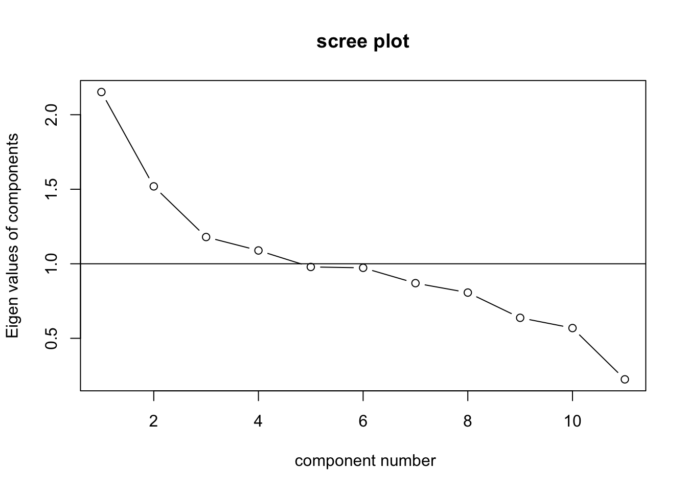
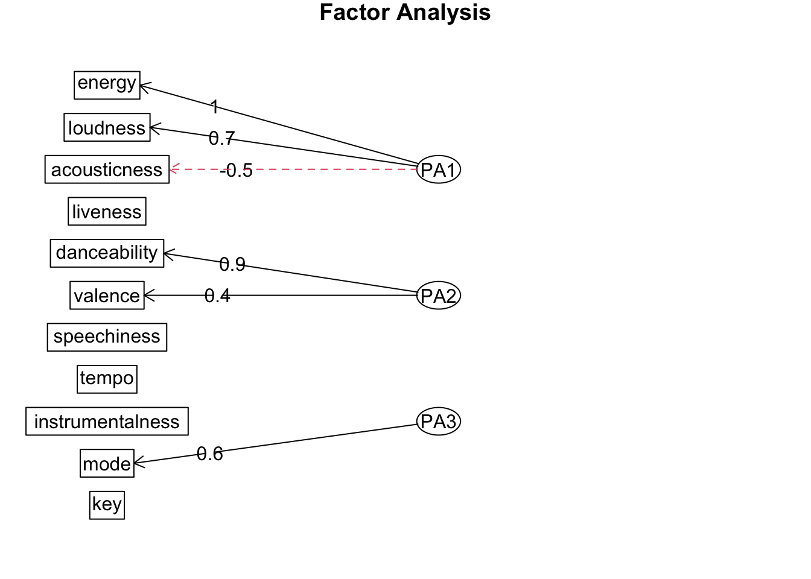

| danceability | energy | key | loudness | mode | speechiness | acousticness | instrumentalness | liveness | valence | tempo | duration_ms | |
|---|---|---|---|---|---|---|---|---|---|---|---|---|
| danceability | 1.00 | -0.09 | 0.01 | 0.03 | -0.06 | 0.18 | -0.02 | -0.01 | -0.12 | 0.33 | -0.18 | -0.10 |
| energy | -0.09 | 1.00 | 0.01 | 0.68 | 0.00 | -0.03 | -0.54 | 0.03 | 0.16 | 0.15 | 0.15 | 0.01 |
| key | 0.01 | 0.01 | 1.00 | 0.00 | -0.17 | 0.02 | 0.00 | 0.01 | 0.00 | 0.02 | -0.01 | 0.02 |
| loudness | 0.03 | 0.68 | 0.00 | 1.00 | -0.02 | 0.01 | -0.36 | -0.15 | 0.08 | 0.05 | 0.09 | -0.12 |
| mode | -0.06 | 0.00 | -0.17 | -0.02 | 1.00 | -0.06 | 0.01 | -0.01 | -0.01 | 0.00 | 0.01 | 0.02 |
| speechiness | 0.18 | -0.03 | 0.02 | 0.01 | -0.06 | 1.00 | 0.03 | -0.10 | 0.06 | 0.06 | 0.04 | -0.09 |
| acousticness | -0.02 | -0.54 | 0.00 | -0.36 | 0.01 | 0.03 | 1.00 | -0.01 | -0.08 | -0.02 | -0.11 | -0.08 |
| instrumentalness | -0.01 | 0.03 | 0.01 | -0.15 | -0.01 | -0.10 | -0.01 | 1.00 | -0.01 | -0.18 | 0.02 | 0.06 |
| liveness | -0.12 | 0.16 | 0.00 | 0.08 | -0.01 | 0.06 | -0.08 | -0.01 | 1.00 | -0.02 | 0.02 | 0.01 |
| valence | 0.33 | 0.15 | 0.02 | 0.05 | 0.00 | 0.06 | -0.02 | -0.18 | -0.02 | 1.00 | -0.03 | -0.03 |
| tempo | -0.18 | 0.15 | -0.01 | 0.09 | 0.01 | 0.04 | -0.11 | 0.02 | 0.02 | -0.03 | 1.00 | 0.00 |
| duration_ms | -0.10 | 0.01 | 0.02 | -0.12 | 0.02 | -0.09 | -0.08 | 0.06 | 0.01 | -0.03 | 0.00 | 1.00 |
2 Methods: Brooke’s Spotify data variable creation
2.1 Background
I created three new variables from the Spotify data. See Table 2.1 for descriptives of the three new variables. Below outlines the steps that were taken to create them.
Specifically, I was curious to know whether there were any latent factors in the data. To examine this, I ran an exploratory factor analysis (EFA) and created factor scores based on those latent dimensions.
2.2 Correlation matrix
Before running the EFA, first I examined a correlation matrix to see whether any of the variables have reasonable correlations.
Looking at the correlation matrix, it seems that loudness and energy are highly positively correlated (r = .68), valence and danceability are positively correlated (r = .33), acousticness and energy are negatively correlated (r = -.54), and acousticness and loudness are negatively correlated (r = -.36). There are a few other smaller correlations, but these are the main ones. I wonder if there could be two factors that relate to how upbeat or chill a song is.
In terms of outliers, it looks like duration in ms, mode, and key aren’t really correlated with much, but mode and key are correlated with each other. I think I’m going to eliminate duration in ms because I’m not sure that relates a ton to the other variables. I’ll keep mode and key! (Also I’m aware this is pretty arbitrary but I’m just going with it.)
2.3 Extracting factors
I’m going to use factor analysis to analyze covariance (rather than unique variance or error variance). I suspect there could be three factors, with one related songs that are upbeat, another with chill song characteristics, and a third with mode and key together (I’m not really a music person but maybe those have to do with the logistics/creation of a song).
To determine how many factors to extract, I could keep factors with an eigenvalue above 1.
[1] 2.1522908 1.5192814 1.1795078 1.0892864 0.9786859 0.9729357 0.8700836
[8] 0.8068100 0.6375606 0.5688131 0.2247446Interestingly, there are four factors with an eigenvalue greater than 1. Let’s look at a Scree plot as well.

It appears there could be a couple elbows here. I guess one elbow could be the third factor, but the more obvious elbow is the fourth factor. Maybe I will try a solution with two factors and also four factors to see how well it fits.
2.3.1 Factor rotation
I think it’s fine for the factors to be correlated, so I’ll use an oblique rotation and retain 4 factors. Based on the eigenvalues alone (and kind of the Scree plot), this seems to be the best fit.
NOTE: I tested 2, 3, and 4 factors, and for the sake of the assignment to have three variables, I decided to go with 3 factors, so that is all I will show here.
# running the factor analysis - 3 factors
fa3 <- fa(r = cor_matrix2, # Correlation matrix input
nfactors = 3, # Number of factors retained
rotate = "oblimin", # Type of rotation used, "oblimin" for "oblique"
covar = FALSE, # Type of input matrix (we're inputting a correlation matrix)
fm = "pa", # principal axis factoring
max.iter = 500) # increasing the maximum number of iterations than the default 2.4 Interpreting findings
I’m going to look at and interpret the results to see what is best. Typically we consider a strong enough link to be >0.30. I’ll also look at whether there’s any variables that load onto multiple factors or neither factors (the first of which being more problematic). Finally, we’ll look at interpretability and whether the factor extraction makes sense.
Also, h\(^2\) values represent the proportion of the variance in a variable that is predictable from the factors underlying it. If communality values equal or exceed 1, there is a problem (too little data, wrong number of factors extracted). A very low communality value for a variable indicates that this variable is an “outlier variable,” because it can’t be predicted from the factors extracted.
Factor Analysis using method = pa
Call: fa(r = cor_matrix2, nfactors = 3, rotate = "oblimin", covar = FALSE,
max.iter = 500, fm = "pa")
Standardized loadings (pattern matrix) based upon correlation matrix
item PA1 PA2 PA3 h2 u2 com
energy 2 1.02 -0.02 0.00 1.043 -0.043 1.0
loudness 4 0.67 0.07 -0.01 0.447 0.553 1.0
acousticness 7 -0.53 -0.02 0.00 0.282 0.718 1.0
liveness 9 0.14 -0.11 -0.03 0.034 0.966 2.0
danceability 1 -0.01 0.86 0.00 0.737 0.263 1.0
valence 10 0.13 0.40 0.04 0.172 0.828 1.2
speechiness 6 0.00 0.18 -0.08 0.043 0.957 1.4
tempo 11 0.15 -0.17 0.00 0.054 0.946 2.0
instrumentalness 8 -0.05 -0.12 -0.02 0.015 0.985 1.4
mode 5 0.00 0.00 0.65 0.419 0.581 1.0
key 3 0.00 0.00 -0.27 0.071 0.929 1.0
PA1 PA2 PA3
SS loadings 1.83 0.99 0.50
Proportion Var 0.17 0.09 0.05
Cumulative Var 0.17 0.26 0.30
Proportion Explained 0.55 0.30 0.15
Cumulative Proportion 0.55 0.85 1.00
With factor correlations of
PA1 PA2 PA3
PA1 1.00 -0.05 -0.01
PA2 -0.05 1.00 -0.10
PA3 -0.01 -0.10 1.00
Mean item complexity = 1.3
Test of the hypothesis that 3 factors are sufficient.
df null model = 55 with the objective function = 1.47
df of the model are 25 and the objective function was 0.19
The root mean square of the residuals (RMSR) is 0.04
The df corrected root mean square of the residuals is 0.06
Fit based upon off diagonal values = 0.94
Energy still has a very high h\(^2\) value and the only variables that really load onto the third factor are mode and key, which was predicted from the correlation matrix. Compared to the 2 factor solution, the three factor seems to be a better fit. On factor one is energy, loudness, and acousticness. Liveness and tempo kind of load onto both factors. For factor two, there is danceability, valence, speechiness, and instrumentalness. So far I think this solution is better than the two factor solution!
The three factor solution also fit better than the four factor solution. With the four factor solution, the h\(^2\) value was still high for energy, but also very high for instrumentalness (1.56) and danceability (2.42). I don’t think these factors are as interpretable. That said, I am going with the three factor solution.
2.5 Conclusion
I’ve decided based on interpretibility and factor loadings, I’m going to go with the three factor solution. This also works best with the assingment :) Finally, about 30% of the variance is being explained by 3 factors.
2.6 Factor scores
Next I’m going to create factor scores from the 3 factor model, which are estimates of the scores participants (songs in this case) would have received on each of the factors had the factors been measured directly. Factor scores weigh individual variables differently from one sample to the next and depend in part on the “other” variables that were included in the factor analysis.
R will automatically call them PA1, PA2, and PA3. They are stuck on the end of the dataset!
2.7 Description of factors
The three factors have the following variables:
Factor One:
- energy
- loudness
- acousticness
- liveness
Factor Two:
- danceability
- valence
- speechiness
- tempo
- instrumentalness
Factor Three:
- mode
- key
From this, I’m going to give the factors different names that are more descriptive than PA1-PA3. Factor One seems to describe the intensity of a song and a measurable amount of property, so I’ll rename Factor One to pa1_intensity (pa = principal axis and 1 = originally factor 1). Factor Two seems to describe level of involvement, which may be a little bit of a stretch, but involvement meaning the extent to which singers, instruments, and movement (i.e., dancing) contribute to a song. I’ll rename Factor Two to pa2_involvement. Finally, Factor Three is pretty basic and describe very technical aspects of songs, so I’ll rename Factor Three to pa3_technicality.
Finally, here are some descriptive statistics for each of the three new factor score variables. The three factors are intensity, involvement, and technicality.
| vars | n | mean | sd | median | trimmed | mad | min | max | range | skew | kurtosis | se | |
|---|---|---|---|---|---|---|---|---|---|---|---|---|---|
| pa1_intensity | 1 | 32833 | 0 | 1.03 | 0.13 | 0.07 | 1.07 | -4.37 | 2.25 | 6.62 | -0.65 | 0.07 | 0.01 |
| pa2_involvement | 2 | 32833 | 0 | 0.87 | 0.09 | 0.04 | 0.88 | -3.93 | 2.07 | 5.99 | -0.47 | -0.01 | 0.00 |
| pa3_technicality | 3 | 32833 | 0 | 0.67 | 0.35 | 0.02 | 0.64 | -1.21 | 1.06 | 2.27 | -0.24 | -1.69 | 0.00 |